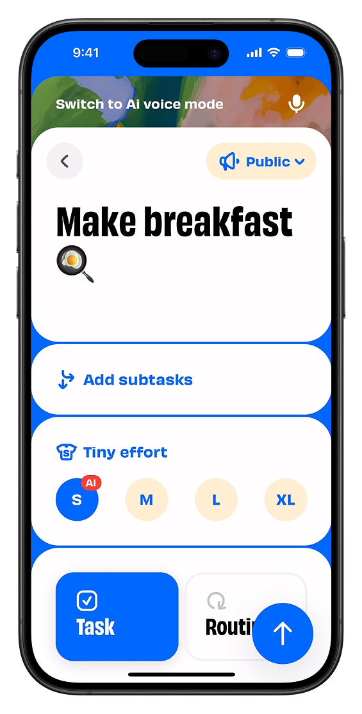

Make UI Graphic Again
Un problema di espressività
Cause storiche
Cause tecniche
Un design delle interfacce visivo
50 interfacce espressive
Conclusioni
INDEX
CLOSE
Oltre usabilità ed estetica:
interfacce come mezzi comunicativi nell’espressione di un’identità
TOCCA L'INTERFACCIA IN MOVIMENTO
PER SCOPRIRE 50 INTERFACCE ESPRESSIVE
